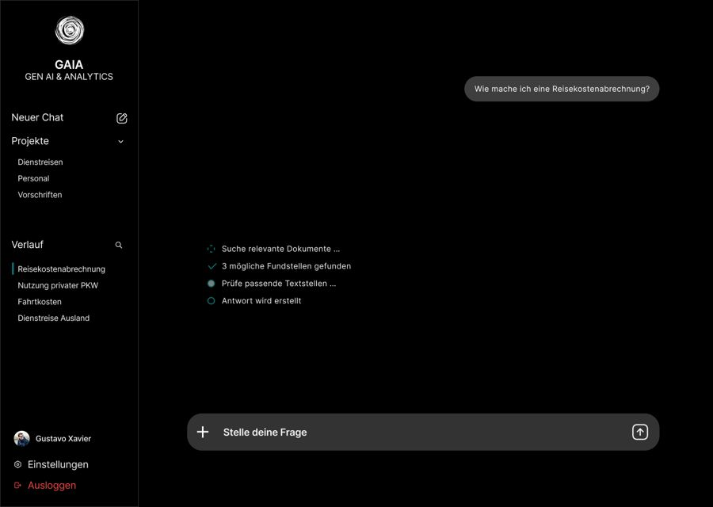
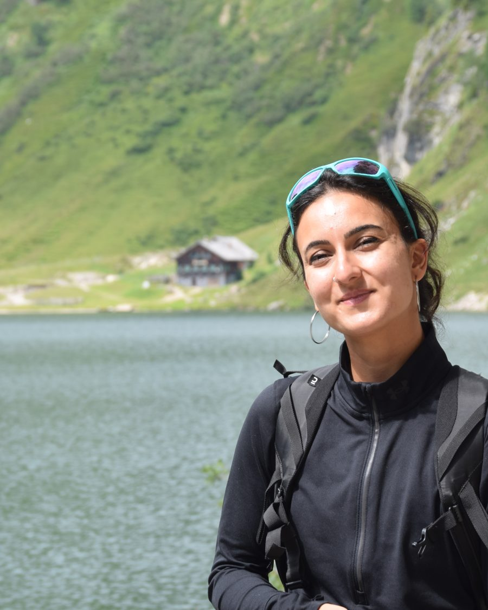
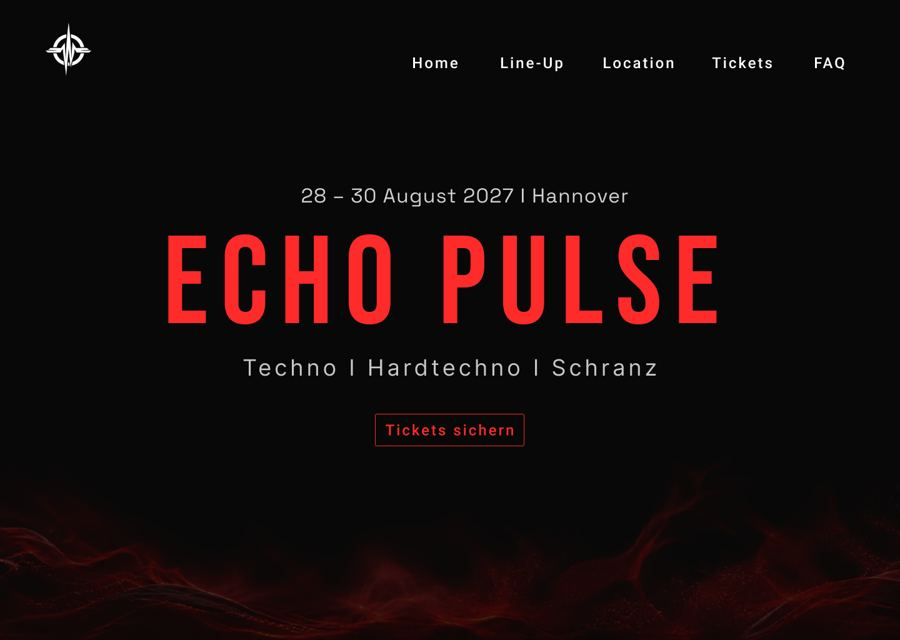
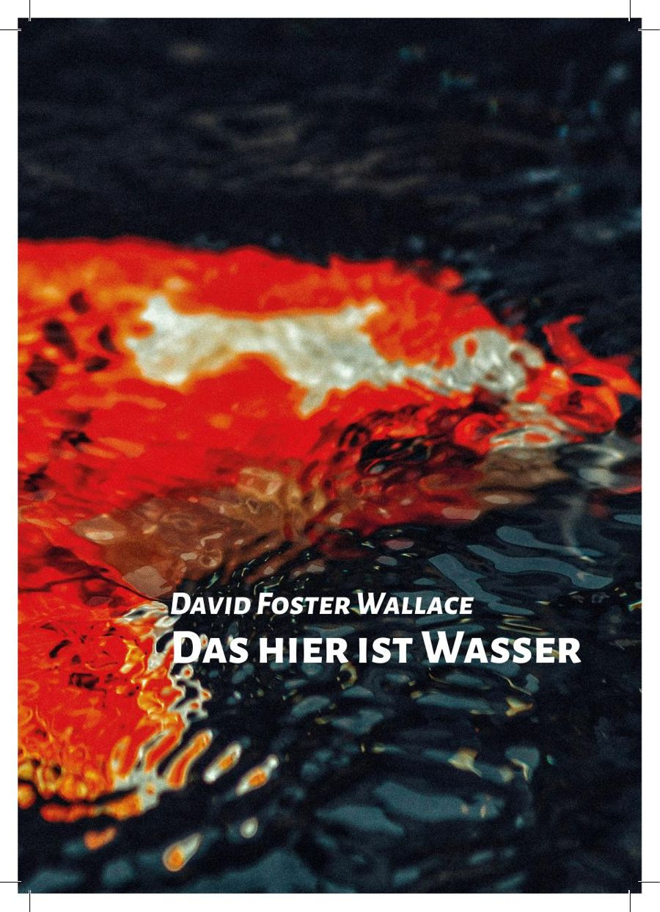
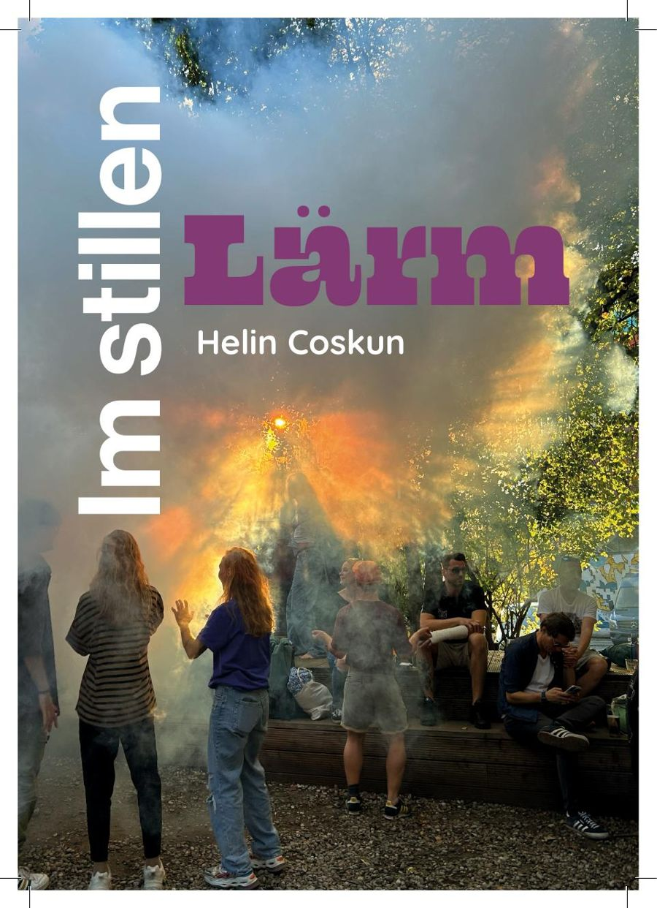
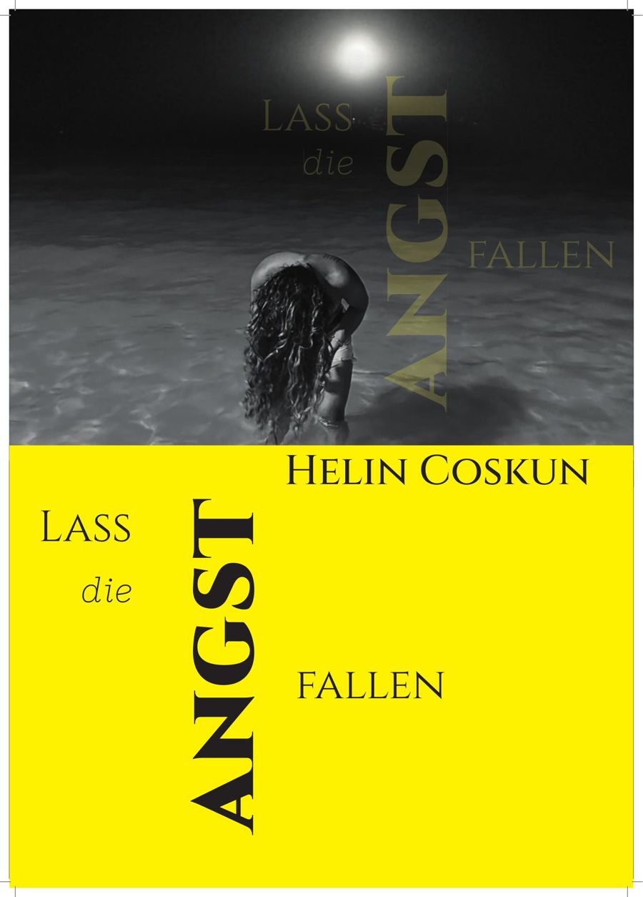

GAIA — Gen-AI-Assistent für die BWI
UI-Design für einen internen KI-Assistenten, der Fragen zu Vorschriften und Dokumenten mit Quellenverweisen beantwortet. Werkstudierendenprojekt, Start Oktober 2026.
UI Design · Figma · BWIDesign · UI/UX
Ich bin Helin — Studentin für Integrated Media and Communication in Hannover, mit einem Blick fürs Detail, den ich mir woanders erarbeitet habe.

Acht Jahre lang habe ich als Polizistin gearbeitet — Verantwortung übernehmen, in Sekunden entscheiden, mit Menschen umgehen: Das prägt mich bis heute. 2024 habe ich mich neu ausgerichtet und eine Ausbildung zur Gestaltungstechnischen Assistentin abgeschlossen. Seitdem gestalte ich lieber Interfaces als Einsätze zu koordinieren — die Sorgfalt ist geblieben.
Aktuell studiere ich Integrated Media and Communication im 5. Semester und arbeite als Werkstudentin bei der BWI. Praxiserfahrung habe ich außerdem bei Fjord Media (Videoproduktion) und beim Experiment e.V. (Marketing) gesammelt.
Wenn ich nicht gerade gestalte, bin ich in Bewegung: Kampfsport, Laufen, Kraftsport, Radsport, Yoga. Kreativ werde ich auch abseits vom Bildschirm — beim Poetry Slam und beim Malen. Und sobald Techno läuft, bin ich meistens auf dem Weg zu einem Rave. Reisen und Tiere runden das Bild ab.
Eine Auswahl aktueller Projekte — mehr folgt in Kürze.

UI-Design für einen internen KI-Assistenten, der Fragen zu Vorschriften und Dokumenten mit Quellenverweisen beantwortet. Werkstudierendenprojekt, Start Oktober 2026.
UI Design · Figma · BWI
UI-Konzept für eine fiktive Techno-Festival-Website, entstanden um mir Figma und UI-Grundlagen selbst beizubringen: Line-up, Location, Tickets und FAQ.
UI Design · Figma Prototyp ansehen ↗
Redaktionelle Gestaltung der Rede „This Is Water“ von David Foster Wallace: Typografie, Satzspiegel und Bildkonzept für ein kleines Buch.
Editorial Design Ausarbeitung ansehen ↗
Persönliches Booklet aus eigenen Fotos und Texten über Rückzug, Reizüberflutung und das Finden von Ruhe im Alltag.
Editorial Design · Fotografie Ausarbeitung ansehen ↗
Coverentwurf mit Bildbearbeitung und Typografie zum Thema Loslassen und Angst.
Cover Design PDF ansehen ↗Ich freue mich über eine Nachricht — für eine Werkstudentenstelle, ein Projekt oder einfach zum Austausch.
h.coskun@web.deHannover, Deutschland